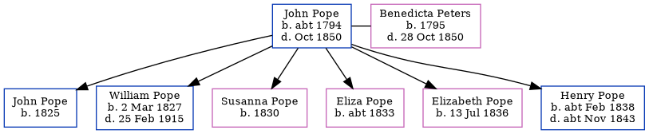

John Isaac Pope c1794 - 1850
[ Home ] | [ Calendar ] | [ Surnames Index ] | [ Errors ] | [ Family History ]John Pope, the husband of Benedicta Peters (the four times great-aunt of Nigel Horne), was born in Folkestone, Kent, England c. 17941,2,3 and married Benedicta (with whom he had 6 children: John, William, Susanna, Eliza, Elizabeth and Henry) at Parish Church of St Mary & St Eanswythe, Church Street in Folkestone on 19 Jul 18146 (St Mary and St Eanswyth Church).
During his life, he was living at Fancy Street in Folkestone in 18411 and on 6 Jun 184110.
He died in Oct 1850 in Folkestone4,5 and was buried there at Ss Mary & Eanswith Church on 12 Oct 18507,8,9.
Children
- John was born in 1825
- William was born on 2 Mar 1827
- Susanna was born in 1830
- Eliza was born c. 1833
- Elizabeth was born on 13 Jul 1836
- Henry was born c. Feb 1838
Citations
- 1841 England Census Online publication - Provo, UT, USA: The Generations Network, Inc., 2006.Original data - Census Returns of England and Wales, 1841. Kew, Surrey, England: The National Archives of the UK (TNA): Public Record Office (PRO), 1841. Data imaged from the National
- England Deaths & Burials 1538-1991 - Findmypast
- Kent, Canterbury Archdeaconry burials 1538-1988 - Findmypast
- England & Wales deaths 1837-2007 - Findmypast
- England & Wales, FreeBMD Death Index: 1837-1915 Online publication - Provo, UT, USA: The Generations Network, Inc., 2006.Original data - General Register Office. England and Wales Civil Registration Indexes. London, England: General Register Office. © Crown copyright. Published by permission of the Cont
- England Marriages 1538-1973 - Findmypast
- England, Select Deaths and Burials, 1538-1991 Ancestry.com Operations, Inc.
- Kent, Canterbury Archdeaconry burials 1538-1988 - Findmypast
- England Deaths & Burials 1538-1991 - Findmypast
- 1841 England, Wales & Scotland Census - Findmypast (was age 46 and the head of the household)
Media
Canterbury Burials Image - GBPRS-CANT-005264855-00342
England & Wales deaths 1837-2007 Transcription - BMD-D-1850-4-AZ-000569-155
England Deaths and Burials 1538-1991 Transcription - R_277037959
England Deaths and Burials 1538-1991 Transcription - R_276350383
England Marriages 1538-1973 - R_848170131
England & Wales deaths 1837-2007 - BMD/D/1850/1/AZ/000598/129
Family Tree
Map
Generated by ged2site. Last updated on Jul 3, 2024